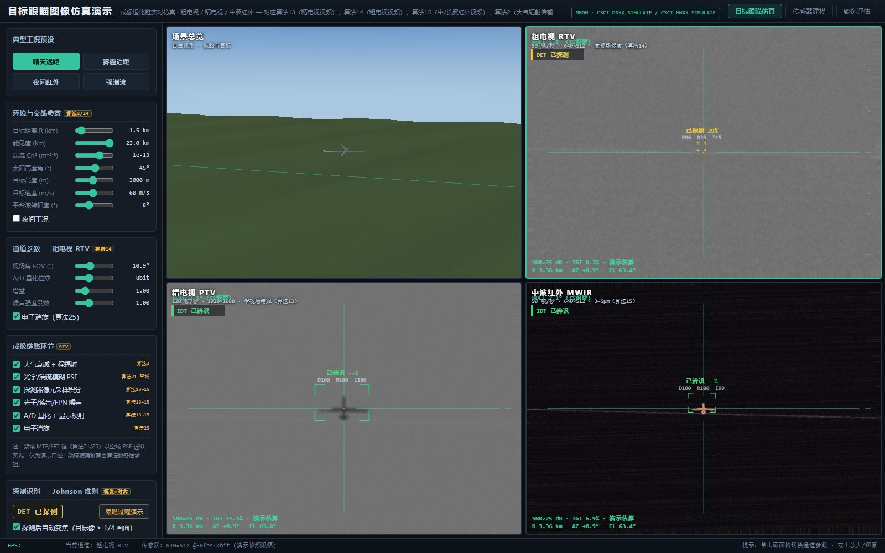
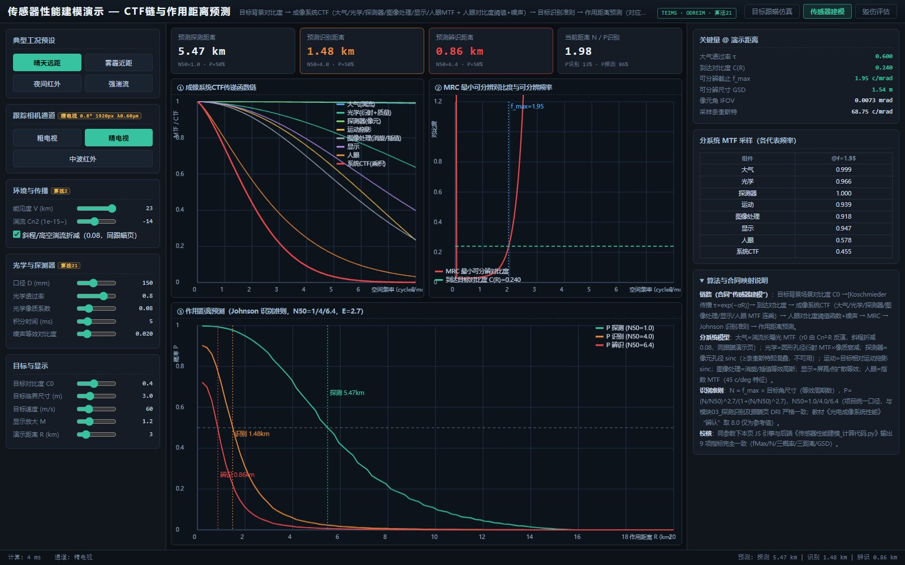
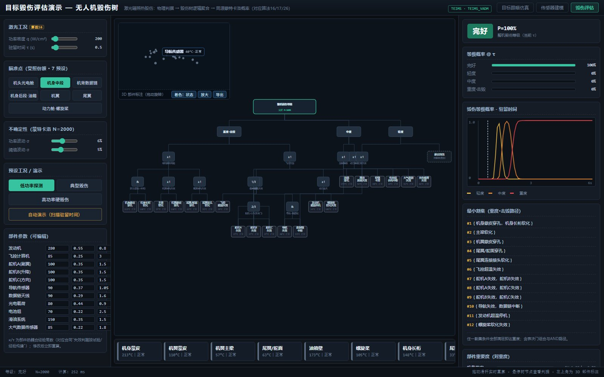
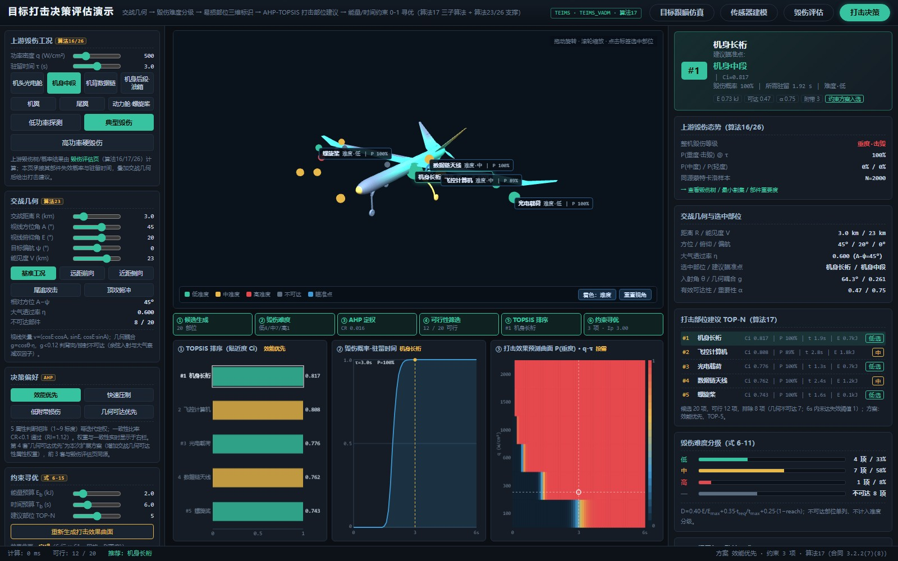
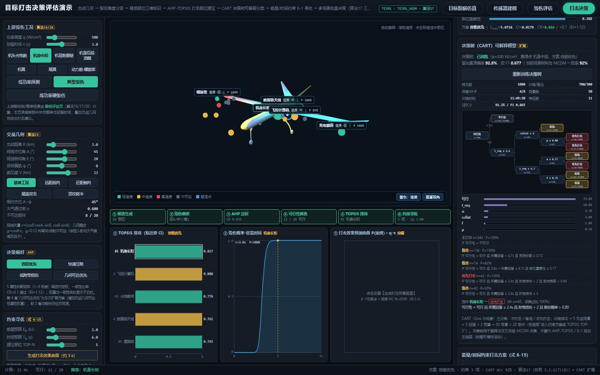
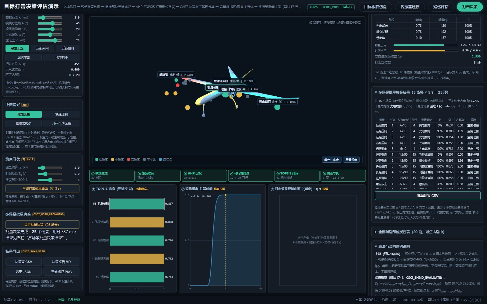

目标跟瞄系统演示 桌面本地版
目标跟瞄系统演示：三通道成像退化链实时仿真 · 传感器性能建模 · 无人机毁伤树毁伤评估 · 目标打击决策评估 —— 四页一体，全过程可见、可调、可拆解。
本演示程序面向目标跟瞄（毁伤环境影响建模）系统，由四个可互跳的演示页组成：目标跟瞄仿真页 加载无人机三维模型（32,674 三角面 STL），按粗电视（RTV）、精电视（PTV）、中波红外（MWIR） 三套传感器参数，实时生成从理想图像到探测器画面的完整成像退化链，并以 Johnson 准则实时给出 探测 / 识别 / 辨识（DRI）概率与跟瞄过程演示；传感器建模页对 MTF 传递链、奈奎斯特采样与 Johnson 探测 / 识别 / 辨识距离做正向解算；毁伤评估页以无人机毁伤树（部件失效 事件经 AND / OR / 表决门逐级聚合）实时评估激光辐照热毁伤下的整机毁伤等级、毁伤概率曲线、最小割集与部件 重要度；打击决策评估页承接毁伤结果与交战几何，按算法 17 完成毁伤难度分级、易损部位三维标识、 5 属性 AHP-TOPSIS 打击部位建议、CART 决策树可解释分类与能量 / 时间约束 0-1 寻优，并输出概率-驻留曲线、效果预测曲面与决策报告； 三张结果图支持悬浮提示与点击应用工况，批量决策覆盖 25 个场景。 软件以网页界面在本机运行，数据不出本机。

目标跟瞄仿真页（主界面）：左上为三维总览（无人机模型与航路），其余三格为粗电视、精电视、 中波红外通道画面；面板提供工况预设、全局滑块、通道参数与成像链环节开关。

传感器建模页：按通道解算光学 / 湍流 / 探测器 MTF 传递链与奈奎斯特频率，正向给出 Johnson 探测 / 识别 / 辨识距离与关键参数，与模块化计算代码逐项零偏差。

毁伤评估页（毁伤树）：三维模型标注部件毁伤状态与难度着色，主视觉为毁伤树逻辑结构（部件失效事件 → AND / OR / 表决门 → 分级顶事件），面板输出整机毁伤等级、概率-驻留时间曲线、最小割集与部件重要度。

打击决策评估页（第四模块）：三维模型按毁伤难度分级着色并标注推荐打击部位；左侧为激光工况、交战几何、 决策偏好与能量/时间预算，右侧输出 TOP-N 打击部位建议、AHP 权重与一致性、约束寻优方案；下部为 TOPSIS 排序柱状图、毁伤概率-驻留时间曲线与打击效果预测曲面（P(重度)·q-τ）。

决策树（CART）可解释模型：对候选部位做"不打击 / 备选 / 优先打击"三分类，展示留出集准确率与宏 F1、 Gini 树结构、特征重要度、主要决策规则与选中部位决策路径；训练样本由 5 交战场景 × 5 驻留 × 2 预算 共 50 场景 × 20 部件生成，用于解释与交叉校验 AHP-TOPSIS / 0-1 规划主链路。

多场景批量决策（CSCI_DJBW_RECOMMEND）：固定当前激光工况 / 瞄准点 / AHP 方案 / 预算，遍历 5 个交战场景 预设 × τ∈{1,2,3,4,5}s 共 25 个场景，逐场景给出推荐部位、毁伤概率、Ci、约束方案 Σp 与整机等级， 支持批量结果 CSV 导出（实测 25 场景约 0.5 s）。
主要功能
四页一体（跟瞄仿真 / 传感器建模 / 毁伤评估 / 打击决策）· 三通道 2×2 实时渲染 · 成像链 7 环节逐级开关 · 毁伤树 20 底事件 · 蒙特卡洛 N=2000 · 打击决策单次计算 <5 s · CART 决策树可解释分类 + 5 折交叉验证 · 25 场景批量决策 · 图表交互查看 · 双端交叉核验 45/45 项零偏差 · 距离 0.5~15 km
算法依据与说明
本演示依据项目《算法详细说明文档》中的算法 2（大气辐射传输）、算法 13/14/15（粗电视 / 精电视 / 红外视频）、算法 21（传感器性能建模，界面以空域 PSF 近似，频域精确解算由算法服务层承担）、 算法 25（图像消旋）、算法 16/17/26（激光辐照热毁伤判据、毁伤树逻辑聚合与同源蒙特卡洛概率） 以及算法 17（目标打击决策评估：毁伤难度评估 / 易损部位标识 / 打击部位建议）、算法 23（交战几何） 与算法 26（毁伤概率与结果可视化）实现；第四模块另按用户要求扩展 **CART 决策树**（Gini 不纯度、留出集评估、 特征重要度与规则导出），用于打击部位三分类的可解释与交叉校验；并按 CSCI_DJBW_RECOMMEND "支持多场景批量决策"要求实现 25 场景批量决策与批量 CSV 导出；三张结果图支持悬浮提示与 点击应用工况，覆盖 CSCI_JGXS_VIEW 的交互查看要求； DRI 数值与 Johnson 准则模块化算法代码保持一致，毁伤树的失效判据按试验 / 经验构建并与故障树分析结合； 打击决策页的 4 属性 AHP/TOPSIS/0-1 规划算例与外部源“模块06_打击决策”Python 实现交叉校核一致。 传感器建模页与 Python 模块化计算代码经双端交叉核验（45/45 项零偏差）；大气透过率等定量环节配有 独立的模块化计算代码与校核报告，可按需提供。